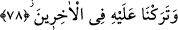
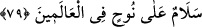
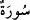
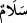
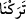
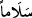
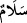
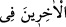

onun yedi çocuğu olduğunu söylemiştir. İrem, Arfahşat, Alim, Yefir, Asod, Tarah, Turah.
İrem; Âd ve Semûd’un babası idi. Arfahşat Arapların babası idi. Onlardan da Fâliğ ve
Kahtan meydana geldi. Fâliğ İbrâhim (a.s.)’ın dedesi, Kahtan Yemen’in babası, Alim
Horasan’ın babası, Asod Fâris’in babası, Yefir Rûm’un babası, Turah Ermenistan’ın
sahibi Ermin’in babası, Tarah Kirman’ın babası idi. Bu diyar ve bölgelerin hepsi onlar
adıyla anılmıştır. Nuh (a.s.)’dan sonra onun halifesi oğlu Sam idi. Nuh (a.s.)’ın diğer
oğullarını o idare eder ve onları çalıştırırdı. O Irak arazisi ve Eyran (İran) şehrinde
yerleşmişti.
Bu kavmin kışı Hûhâ diyarında yaz aylarını da Musul’da geçirdiği söylenir.
Yine Nuh (a.s.)’ın Yâm isminde bir oğlu olup ancak onun gemiye binmediği tufanda
boğuldu ve ve ondan zürriyyet gelmediği söylenir.
78. Sonradan gelenler içinde ona iyi bir nam bıraktık.
“Sonradan gelen” ümmet ve millet”ler içinde ona iyi bir nâm bıraktık.”
79. Bütün âlemlerde Nuh’a selâm olsun!
“Bütün âlemlerde Nuh’a selâm olsun!” Bu söz hikaye yoluyla aynen olduğu gibi
gelmiştir. Mesela “
” sözü gibidir. “
” kelimesi aynen Nûr Suresi’nin
ilk âyetinde olduğu gibi ötre olarak hikaye edilmiş bu ibarede mef’ul olduğu halde
mensup olmamıştır. Burada “
” kelimesinde de durum aynıdır. Bu kelime, “
”
terkibinin mef’ulu olup “
” şeklinde okunup yazılması gerektiği halde başlangıçta
bunu söyleyen kimse “
” diye söylediği için kelime aynen hikaye edilmiştir. Zira
hikaye edilen söz değişmez, hep aynı kalır. Mânâ şöyledir: Ümmetler ve milletler Nuh
(a.s.)’a sürekli olarak salât ve selâm ederler.
“Bütün âlemlerde” Bu söz, “
” (sonradan gelenler) sözünden bedeldir.
“Bütün âlemlerde” ifadesine melekler, insanlar ve cinlerin hepsi dahil olduğu için bu
söz, “
” sözünden daha kapsamlıdır. Bu sözden maksat melekler, insanlar ve
cinler tarafından yapılan ta’zim, selâm ve duanın âlemlerde hep sabit ve dâim
olmasıdır. Kurtubî tefsirinde der ki: Nuh Tufanı’nda yılan ve akrep de gemiye binmek
için Nuh (a.s.)’a geldiler. Nuh (a.s.) onlara: “Sizi gemiye alamam. Zira siz çevreye
zarar verir, insanların başına bela olursunuz.” dedi. Yılan ve akrep: “Sen bizi gemiye